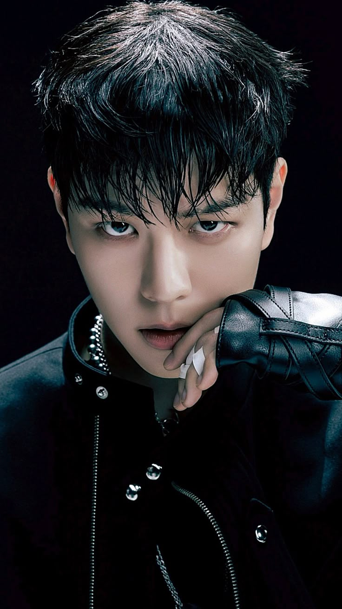
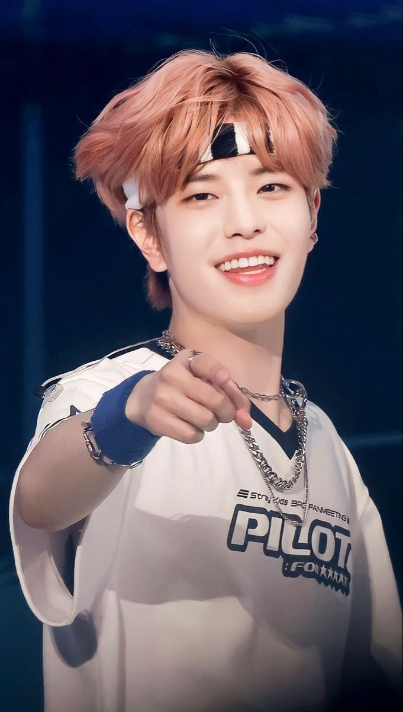
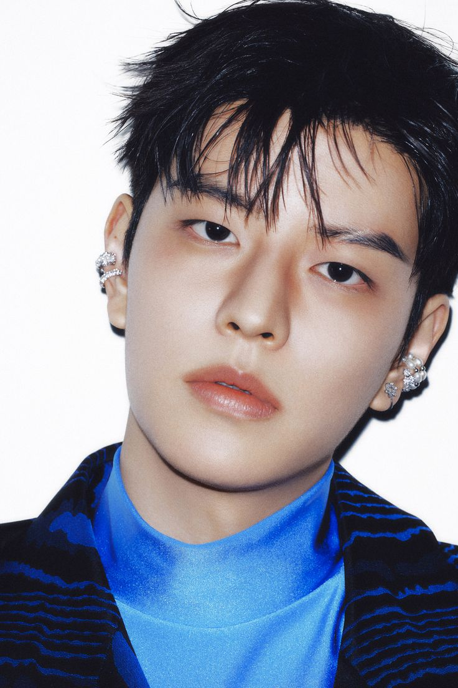
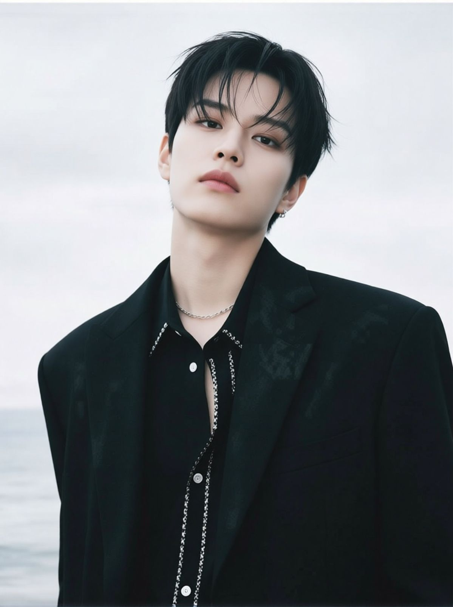
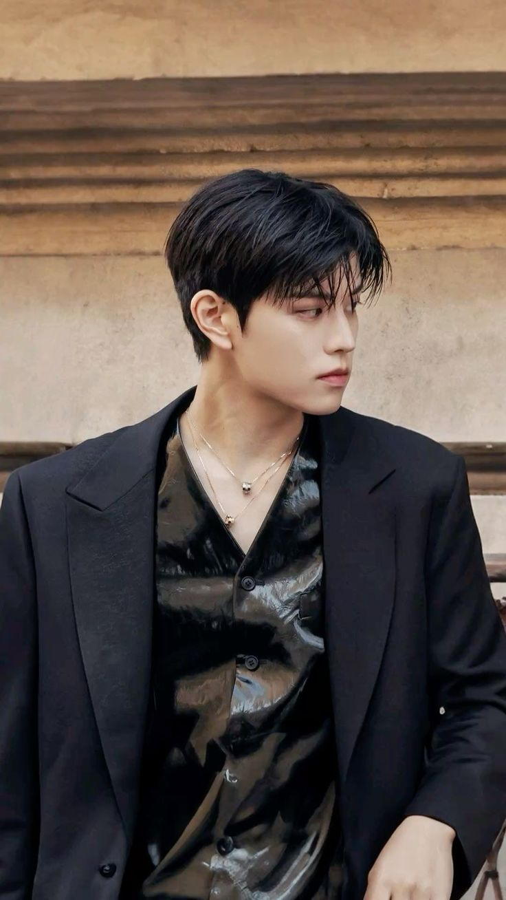

Seung Min
Perfil
Nombre completo: 김승민 / Kim Seung Min
Apodos:Dandy Boy, Minnie
Profesión:Cantante, Bailarín, MC.
Fecha de nacimiento:22-Septiembre-2000 (25 Años)
Lugar de nacimiento: Seúl, Corea del Sur
Estatura: 178 cm
Peso: 56 kg
Tipo de sangre: A
Signo zodiacal: Virgo
Signo zodiacal chino: Dragón
Familia:Padres y hermana mayor
Agencia: JYP Entertainment
Temas para Dramas
All I Want Is You tema para Would You Marry Me (2025)
My Destiny tema para The Potato Lab (2025)
Destiny tema para The Midnight Studio (2024)
Close to You tema para Love in Contract (2022)
Here Always tema para Hometown Cha Cha Cha (2021)
Programas de TV
We K-Pop (KBS, 2019) MC junto a In Seong, Kim Shin Young y Nichkhun
After School Club (Arirang TV, 2018) MC
Stray Kids (Mnet, 2017)
Programa de Radio
2019: (SBS) Power FM Young Street Radio (15.04.2019) junto a Hyun Jin, Han y Felix
2018: (MBC) Idol Radio (12.11.2018) Ep. 42 junto a San Ha, Yoo Seon Ho y Lee Eui Woong
2018: (SBS) Power FM 'NCT Night Night Radio' (15.11.2018) junto a I.N, Han, Felix y Hyun Jin
Curiosidades
Estudios:Cheongdam High School (Graduado)
Modelo a seguir:DAY6 y Sandeul de B1A4.
Hobbies: Escribir en un diario, escuchar música, caminar rápido.
Idiomas:Coreano (Materna), Inglés (Intermedio).
Artista favorito:Shawn Mendes y DAY6.
Comida favorita:Huevos
Se unió a JYP Entertainment en 2017 después de ganar el segundo lugar
en la 13ava audición abierta de JYP Entertainment en 2016.
Perteneció a la escuela vocal "M ACADEMY".
Si no hubiera sido cantante, hubiera querido ser fotógrafo o fiscal.
Tiene 9 canciones con derechos de autor a su nombre según Korea Music Copyright Association.
Fue MC del programa de televisión After School Club.
imágenes



